Here I try to present (and explore) various aspects of how Universe works. This includes looking at polyhedra (an indication of the shape of space), dynamics, some mathematics, some physics, etc.
Also included is my work with Lynnclaire Dennis in which I try to create computer graphics to help illustrate what she describes.
| 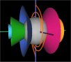 | Dirac String Trick.: - Here is how I visualize the motion of the strings for programming the Dirac String Trick. Some speculate that this motion is connected with spin-1/2 particles. (See WSM below for more on this topic.) (08-29-2008) |
|
Wave Structure of Matter model.: - Animations and descriptions to help clarify and extend Milo Wolff's WSM. (06-03-2008) |
| 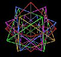 | Modeling 5 Octa: - Looking at how to build a model of the 5 intersecting Octahedra. (03-13-2004) |
| 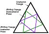 | Jitterbug triangle orientations: - I find that the Jitterbug's triangle in the Dodecahedron position is a 60° rotation from the Icosahedron position, exactly. This forms a Star of David intersection of triangles. (07-02-2003) |
| 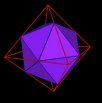 | 10 Octahedra defined Icosahedra in matrix: - Since there are 5 Octahedra in the basic polyhedra matrix, and there are 2 Icosahedra per Octahedron, there are 10 Icosahedra within the Octahedra space. (07-01-2003) |
| 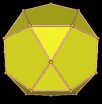 | Marvin Solit's Polyhedra Work: - I am looking into Marvin Solit's 30-Verti and other polyhedra and I am helping him document his discoveries. Along the way, I add my own discoveries and connections. (04-29-2003) |
| 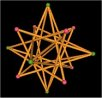 | Dual Polyhedra Motions - Here I look at two different kinds of motion of the Platonic polyhedra. (06-23-2002) |
| 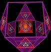 | Limits vs Levels - Here I show that what is perceived as a maximum is but a minimum from another point of view. What is the end is but a start. Possible geometric model of "enlightenment"? (06-19-2002) |
| 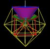 | Cone Angles - Here I show that some angles calculated from Physics matches cone angles generated by the Jitterbug motion. (06-09-2002) |
| 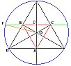 | Golden Ratio in 3-, 6-fold Geometry - I thought the Golden Ratio only occurred in 5-fold (pentagon, pentagram) geometry. Here it is using 3- and 6-fold geometry. (05-29-2002) |
| 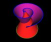 | Path Curve Geometry - From Lawrence Edwards' book "The vortex of life : nature's patterns in space and time" I learned a little but about projective geometry and Path Curves. The shapes generated relate to pine cones, flower and tree buds, eggs, embryos, etc. Relates to intersecting vortices: a theme I am finding over and over again in Universe. (2001) |
| 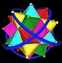 | Lynnclaire Dennis' Geometry - Lynnclaire Dennis had several near death experiences and "brought back" several interesting bits of geometric information which I am helping to identify and describe. |
|
An Introduction to Polyhedra and the Jitterbug - Here is a web version of a presentation I gave at the State University of New York, Oswego, Department of Technology's 63rd Annual Fall Conference, Oct. 25-26, 2001. |
Usage Note: My work is copyrighted. You may reference and use my work in non-profit projects but you may not include my work, or parts of it, in any for-profit project without my consent.